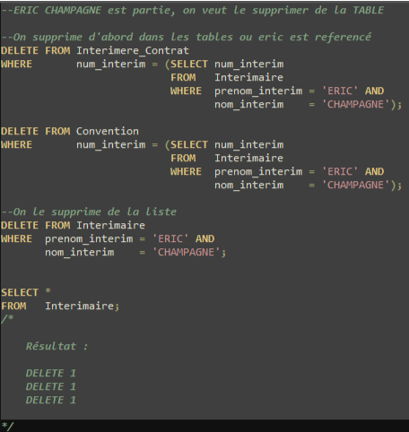

Situation
Une SAE plutot facile qui demande la création et questionnement de la base de données.
Le sujet est le suivant : une entreprise du nom de TEMPO dont l'activité consiste à placer des employés intérimaires auprès des entreprises,
nous demande la création d'une base de donnée.
Cette SAE est composé de deux phase : la modélisation, puis, la réalisation.
Réalisation
Une fois le MCD travaillé, on a lu une dernière fois le sujet pour s'assurer de ne pas oublier de conditions spécial pour
l'insertion des données. On a donc a commencer la création des tables, leur questionnements etc...

Et on a insérerer des données fournis tout en respectant les caardanilités.
Pour voir le code en entier, n'hésitez pas à aller sur google doc
SAE 1.04 .